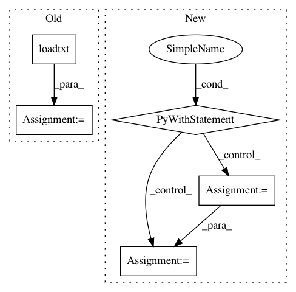

c28a63fa9d9fb9ba3cced7052ea243e8884f9bf1,tensorflow_datasets/image/deep_weeds.py,DeepWeeds,_generate_examples,#DeepWeeds#Any#Any#,123
Before Change
def _generate_examples(self, data_dir_path, label_dir_path):
Generate images and labels for splits.
// parse the csv-label data
csv = np.loadtxt(label_dir_path,
dtype={"names": ("Filename", "Label", "Species"), "formats": ("S21", "i4", "S1")},
skiprows=1,
delimiter=",")
label_dict = {}
for entry in csv:
label_dict[entry[0].decode("UTF-8")] = int(entry[1])
for file_name in tf.io.gfile.listdir(data_dir_path):
image = os.path.join(data_dir_path, file_name)
label = _NAMES[label_dict[file_name]]
yield file_name, {"image": image, "label": label}
After Change
def _generate_examples(self, data_dir_path, label_path):
Generate images and labels for splits.
with tf.io.gfile.GFile(label_path) as f:
reader = csv.DictReader(f)
// Extract the mapping int -> str and save the label name string to the feature
label_id_to_name = {
row["Label"]: row["Species"] for row in reader
}
self.info.features["label"].names = [v for k, v in sorted(label_id_to_name.items())]
filename_to_label = {
row["Filename"]: row["Species"] for row in reader
}
for file_name in tf.io.gfile.listdir(data_dir_path):
In pattern: SUPERPATTERN
Frequency: 3
Non-data size: 5
Instances
Project Name: tensorflow/datasets
Commit Name: c28a63fa9d9fb9ba3cced7052ea243e8884f9bf1
Time: 2019-11-21
Author: supertux90@googlemail.com
File Name: tensorflow_datasets/image/deep_weeds.py
Class Name: DeepWeeds
Method Name: _generate_examples
Project Name: PIQuIL/QuCumber
Commit Name: ef419d7898b165aa74d95e68ca83ebfcfccd00f1
Time: 2018-07-23
Author: gtorlai@uwaterloo.ca
File Name: qucumber/test_grads_complex.py
Class Name:
Method Name:
Project Name: PIQuIL/QuCumber
Commit Name: 03e4692d86831b9a497e2ce90ce06b0df60b3ecb
Time: 2018-05-23
Author: emerali@users.noreply.github.com
File Name: benchmarks/python/run_rbm.py
Class Name:
Method Name: train